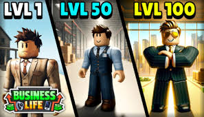
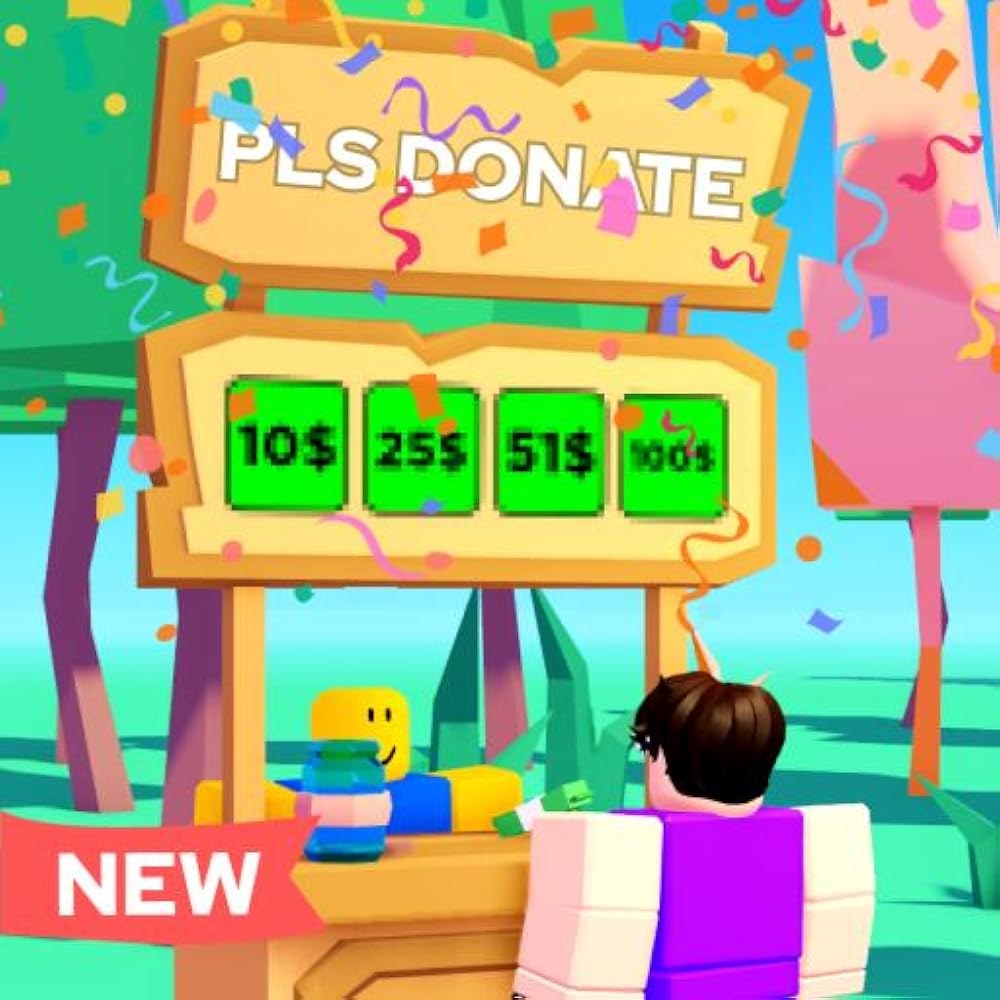
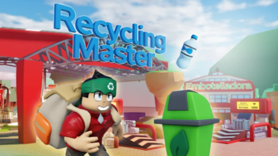

Empresas
Introducción al concepto de ASG
El concepto de ASG (Ambiental, Social y Gobernanza) se refiere a los criterios que las empresas en Business Life deben considerar
para ser sostenibles y responsables. Implica el cuidado del medio ambiente, el impacto social positivo y una buena gobernanza corporativa.

Diseño y Producción Sostenibles
Las empresas pueden adoptar prácticas como:
- Economía circular: Reducir, reutilizar y reciclar para minimizar los residuos.
- Ecodiseño: Diseñar productos teniendo en cuenta su impacto ambiental a lo largo de su ciclo de vida.
- Reciclaje: Implementar sistemas que permitan recuperar materiales para su reutilización.
Certificaciones Sostenibles
Existen certificaciones que avalan el compromiso con la sostenibilidad, como:
- ISO 14001: Gestión ambiental.
- EMAS: Sistema de Gestión y Auditoría Medioambientales.
- Fair Trade: Promoción de prácticas comerciales justas.
Ciudadanos
ODS (Objetivos de Desarrollo Sostenible)
Los ODS son una iniciativa global para erradicar la pobreza, proteger el planeta y garantizar la prosperidad para todos. Los ciudadanos pueden contribuir:
- Ahorrando agua y energía.
- Separando residuos correctamente.
- Consumiendo productos locales y de temporada.
- Donando en Pls Donate

Reducir la Huella de Carbono
Ideas para disminuir el impacto ambiental individual:
- Usar el transporte público, bicicleta o caminar.
- Reducir el uso de plásticos de un solo uso.
- Practicar el compostaje en casa.
Programas del Ayuntamiento
Muchos ayuntamientos ofrecen recursos para facilitar la sostenibilidad, como:
- Subvenciones para proyectos sostenibles.
- Puntos de recogida de residuos especiales.
- Talleres educativos sobre medio ambiente.
- Recycling Master Workshop.
